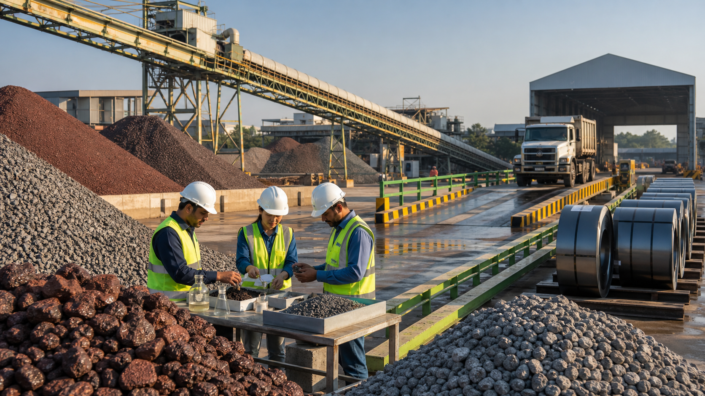
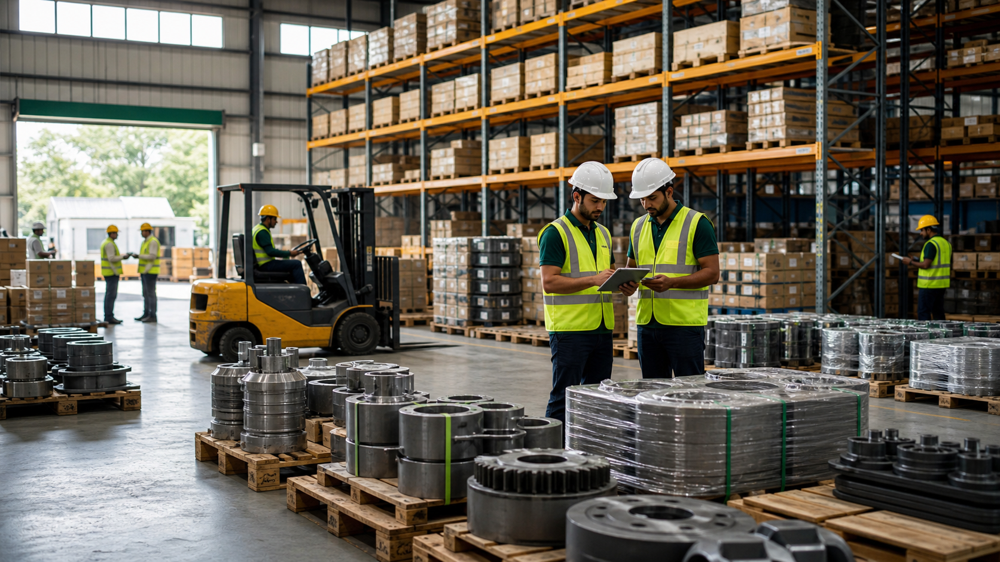
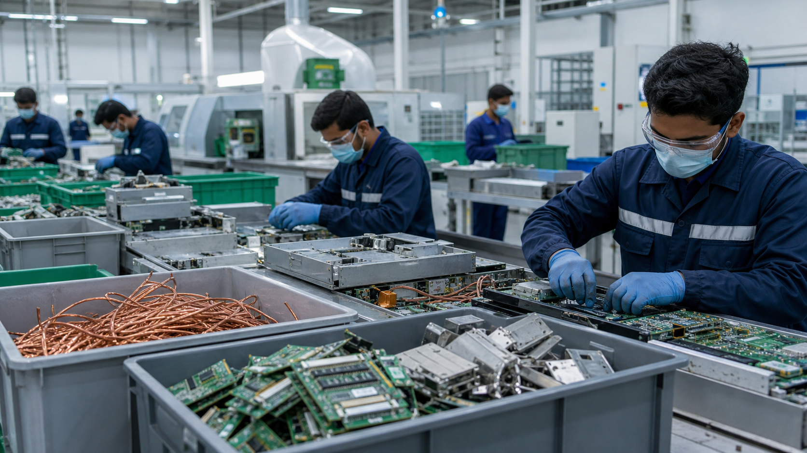

Raw Materials Supply
Iron ore, coal, limestone, bauxite, gypsum, and other bulk inputs with vendor evaluation, supply scheduling, and contract support.
Powering India's Industrial Future
A Thiruvananthapuram-headquartered industrial solutions provider sourcing raw materials, moving critical freight, managing warehousing, and enabling sustainable resource recovery for Indian manufacturing.
Mission-led industrial aggregation
Aryavarta Industrial Resources Private Limited was incorporated on 15 January 2026 as a private limited company under ROC Ernakulam. The company serves SMEs and large enterprises that need dependable procurement, freight visibility, technical spares, and circular-economy support.
Operating picture
The website has been structured to show Aryavarta as a practical operating company: not only a trader, not only a transporter, but a resource partner that can support multiple stages of an industrial requirement.



Products and services
From raw-material allocation to port liaison, our model combines procurement discipline, operational control, and documentation support across the supply chain.
Iron ore, coal, limestone, bauxite, gypsum, and other bulk inputs with vendor evaluation, supply scheduling, and contract support.
Crusher parts, conveyor belts, bearings, motors, and plant consumables for mining, processing, and manufacturing units.
Road, rail, and coastal freight coordination with real-time tracking discipline, route planning, and exception management.
Eight strategic locations with bonded and non-bonded storage options, inventory checks, dispatch planning, and 3PL support.
Eco-friendly recovery of metals and components through compliant handling, segregation, documentation, and partner routing.
Factory setup advisory, MSME vendor development, procurement process design, and supplier onboarding support.
How the work moves
Every industrial requirement is converted into a trackable operating plan with clear ownership, timelines, documentation, and exception handling.
Volume, grade, plant location, delivery urgency, storage needs, and documentation expectations are mapped first.
Domestic suppliers, mining partners, trading channels, and spare-part sources are compared for fit.
Material cost, freight assumptions, tax treatment, storage charges, and risk points are presented clearly.
Dispatches, truck placement, rail/coastal coordination, warehouse intake, and delivery updates are tracked.
Invoices, e-way bills, material documents, GRN support, and compliance records are closed methodically.
Recurring accounts get delivery performance, cost variance, supplier quality, and risk review inputs.
Momentum since incorporation
Within six months of incorporation, Aryavarta signed MOUs with three domestic mining firms and two international trading partners in Singapore and UAE, building a base for reliable sourcing and global trade lanes.
Structured supplier relationships for critical industrial minerals and bulk raw materials.
Singapore and UAE partner channels for import-export continuity and commodity sourcing.
Road, rail, and coastal movement planning across major industrial corridors.
GST, IEC, MSME, professional tax, ESI/PF, and ISO certification roadmap in progress.

Commercial credibility
A genuine industrial website should answer procurement, finance, logistics, and compliance questions before the first call. Aryavarta's pages now include registration data, projected financials, leadership profiles, service scopes, branch addresses, documentation workflows, and sector fit.
Talk to the Thiruvananthapuram headquarters or your regional office for procurement, freight, storage, or recycling support.